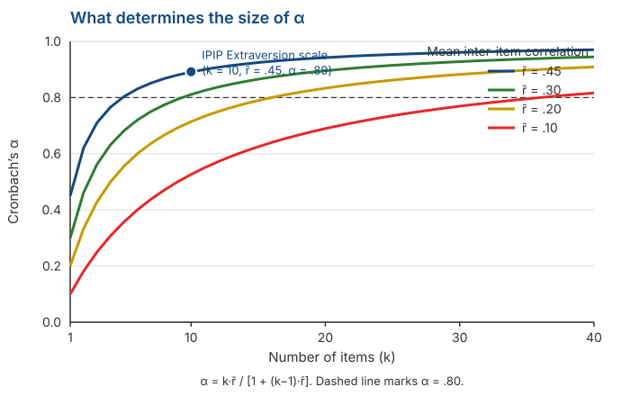

Reliability: Core Concepts and Implementation
Psychological Scale Construction
2026-08-13
Outline
- Reliability is not one thing: three different questions
- Split-half and the Spearman-Brown formula
- Cronbach’s alpha: what it actually measures, and what it does not
- A demonstration with real data: \(\alpha\) cannot detect multidimensionality
- The omega coefficient and the tau-equivalence assumption from Session 3
- Computing it in jamovi, and what you should report
From a definition to a computation
What we already have
In Session 3 we defined reliability as a proportion of variance:
\[\rho_{XX'} = \frac{\sigma^2_T}{\sigma^2_X}\]
The problem is that \(\sigma^2_T\) is unobservable. So that formula cannot be computed directly.
Everything in today’s session is about estimating it from something we can observe: correlations.
The data we use today
Every number on the following slides is computed from data/data.csv in this course repository — 50 IPIP Big Five items, n = 19,718. You can reproduce all of it in jamovi.
Reliability
Three different questions
| Question | Source of error examined | Method |
|---|---|---|
| Are scores stable over time? | Momentary fluctuation | Test-retest |
| Are scores equivalent across forms? | Item selection | Alternate forms |
| Are the items consistent with each other? | Variation between items | Split-half, \(\alpha\), \(\omega\) |
These are not three ways of computing the same thing
Each examines a different source of error. A scale can be highly internally consistent and yet completely unstable from one week to the next.
Reporting \(\alpha\) tells you nothing about the stability of your scores over time.
Test-retest
Measure the same people twice and correlate the two scores.
The interval matters a great deal. Too short and respondents remember their answers; too long and the attribute may genuinely have changed.
There is one problem that cannot be avoided: if the correlation is low, we cannot tell whether the instrument is unreliable or the people have changed.
Split-half and Spearman-Brown
A simple idea
Split the scale into two halves — say odd-numbered and even-numbered items.
Compute a total for each half and correlate them.
If both halves measure the same thing, the correlation should be high.
For the IPIP Extraversion scale (10 items), the odd-even correlation is:
\[r = 0.748\]
But there is a problem
That correlation is the reliability of a 5-item test, not a 10-item one.
We have just cut our scale in half and then reported the reliability of the halved version.
Recall from Session 3: fewer items means a larger share of error. So 0.748 underestimates the real reliability of the scale.
What we need
A formula that answers: “if a test of this length has reliability X, what would its reliability be if we doubled its length?”
The Spearman-Brown formula
For split-half, correcting from half length to full length:
\[\rho_{\text{full}} = \frac{2r}{1+r}\]
With \(r = 0.748\):
\[\rho = \frac{2 \times 0.748}{1 + 0.748} = \frac{1.496}{1.748} = \mathbf{0.856}\]
Note
The formula was derived independently by Spearman (1910) and Brown (1910) in the same year and the same journal, which is why both names are attached.
The general form
If test length is multiplied by \(n\):
\[\rho^* = \frac{n\rho}{1 + (n-1)\rho}\]
Recall Bernoulli’s arrows from Session 1. The Spearman-Brown formula shows why adding items raises reliability.
The condition people forget
The formula assumes the added items are equivalent to the existing ones. Adding ten careless items will not produce this result.
But which half?
A 10-item scale can be split into halves in 126 different ways. Odd-even is only one of them.
We tried 500 random splits of the Extraversion scale. The Spearman-Brown results ranged from 0.845 to 0.920.
So the answer depends on which split you happen to choose. That is not an ideal situation.
The way out
If every split gives a different answer, take the average of all of them.
That is what Cronbach’s alpha does.
Cronbach’s alpha
The formula
\[\alpha = \frac{k}{k-1}\left(1 - \frac{\sum \sigma^2_i}{\sigma^2_X}\right)\]
where \(k\) is the number of items, \(\sigma^2_i\) each item’s variance, and \(\sigma^2_X\) the variance of the total score.
Note what is being compared: the sum of item variances against the variance of the total.
If items do not correlate, the total variance is just the sum of item variances, and \(\alpha\) approaches zero.
If items correlate strongly, the total variance is much larger, and \(\alpha\) approaches one.
\(\alpha\) is the average of all splits
Across those 500 random splits, the mean Spearman-Brown coefficient was 0.892.
Cronbach’s alpha for the same scale is 0.892.
Exactly the same number.
What \(\alpha\) actually is
\(\alpha\) is not a special coefficient. It is the average of all possible split-halves of your scale (Cronbach, 1951).
That is how it solves the “which half?” problem: it uses all of them.
What determines the size of \(\alpha\)

Only two things
- The number of items (\(k\)) and the mean inter-item correlation (\(\bar{r}\)). Nothing else.
\[\alpha = \frac{k\bar{r}}{1 + (k-1)\bar{r}}\]
The Extraversion scale: \(\bar{r} = .45\) with 10 items gives \(\alpha = .89\).
Look at the bottom curve: with \(\bar{r} = .10\) you would need more than 35 items to pass .80.
A consequence worth noting
Because \(k\) is part of it, a high \(\alpha\) can be bought simply by adding items. You do not need better items; you just need more of them.
Spearman-Brown projections for our scale
Starting from \(\alpha = .892\) at 10 items:
| Number of items | Projected \(\alpha\) |
|---|---|
| 5 | .805 |
| 10 | .892 |
| 20 | .943 |
| 30 | .961 |
Doubling the scale from 10 to 20 items raises \(\alpha\) by .05. Adding 10 more items (20 to 30, a 50% increase) adds only .018.
The returns keep shrinking while respondent burden keeps growing.
About the .70 threshold
Almost everyone cites .70 as the minimum, and attributes it to Nunnally.
Lance, Butts, & Michels (2006) went back to the source. Nunnally proposed .70 only for the early stages of research; for basic research he recommended .80, and for decisions about individuals .90 or higher.
The .70 used everywhere is, in effect, a misapplied citation.
What to do instead
Do not treat .70 as pass or fail. Match it to what your scores are for: for group-level research .70 is adequate; for decisions about individuals, especially in high-stakes contexts, .70 is nowhere near enough.
What \(\alpha\) does not measure
An experiment
We took 5 Extraversion items and 5 Neuroticism items from the same dataset.
They clearly measure different constructs. The combined scale makes no substantive sense.
We then treated them as a single 10-item scale and computed \(\alpha\).
\(\alpha = 0.616\)
Why doesn’t mixing two scales produce an obviously bad \(\alpha\)?
0.616 does not look problematic. It looks like a middling scale that could be improved.
Many reports would describe it as “acceptable” and carry on with the analysis.
Yet that scale mixes two different constructs, and we know it does, because we built it that way on purpose.
The point
\(\alpha\) was never designed to detect how many dimensions live inside your scale. It looks only at the mean inter-item correlation and the number of items.
What is actually going on inside
| Mean correlation | |
|---|---|
| Between items within the Extraversion block | .507 |
| Between items within the Neuroticism block | .421 |
| Between blocks | −.125 |
Within each block the correlations are high. That alone is enough to lift \(\alpha\) to .616.
The between-block correlation is small and negative — a sign that these are not one thing.
The eigenvalues of the correlation matrix: 3.53 — 2.23 — 0.79. The first two are both large, meaning two dimensions, not one.
Now compute \(\omega\)
\(\alpha = 0.616\) but \(\omega = 0.151\)
\(\omega\) asks a different question: what proportion of total score variance comes from one general factor?
For this mixed set the answer is almost none — because there is no single general factor there.
In short
- \(\alpha\) = 0.616 means “these items correlate with each other”
- \(\omega\) = 0.151 means “these items do not measure the same construct”
Omega
Why \(\alpha\) needs a companion
Recall from Session 3: \(\alpha\) assumes the tau-equivalent model, in which every item relates equally strongly to the latent variable.
If your items are really congeneric — and they almost always are — that assumption does not hold.
\(\omega\) makes no such assumption. It uses each item’s loading as it is.
\[\omega = \frac{\left(\sum \lambda_i\right)^2}{\left(\sum \lambda_i\right)^2 + \sum \psi_i}\]
where \(\lambda_i\) is item \(i\)’s loading and \(\psi_i\) its error variance.
On a genuinely unidimensional scale
The IPIP Extraversion scale, 10 items:
| Value | |
|---|---|
| Cronbach’s \(\alpha\) | .892 |
| McDonald’s \(\omega\) | .893 |
| Loading range | .55 – .76 |
The two are almost identical. That is not a coincidence.
The loadings are fairly uniform (.55 to .76), so the violation of tau-equivalence here is small.
A note on this
\(\omega\) is not always larger or smaller than \(\alpha\). When items are uniform, the two sit close together. The difference appears precisely when your construct is not unidimensional.
When they diverge
When item loadings vary widely. Here \(\alpha\) tends to fall below the true reliability.
When the scale is multidimensional. Here \(\alpha\) still looks reasonable while \(\omega\) collapses — exactly as in the demonstration.
How to use this in practice
Compute both. If \(\alpha\) and \(\omega\) are close, you have additional evidence that your scale’s structure is reasonably clean. If they are far apart, that is a sign that something needs checking, not a choice of which number to use.
But neither replaces checking dimensionality
Both \(\alpha\) and \(\omega\) are single numbers summarising an entire scale.
A single number cannot tell you how many dimensions live in your items.
For that you have to look at the correlation structure itself: eigenvalues, a scree plot, or a factor analysis.
Precision at the individual level
SEM with real numbers
The IPIP Extraversion scale: \(\sigma_X = 9.22\) and \(\alpha = .892\).
\[SEM = \sigma_X\sqrt{1-\alpha} = 9.22 \times \sqrt{0.108} = \mathbf{3.03}\]
A 95% interval for someone scoring 30:
\[30 \pm 1.96 \times 3.03 \;\approx\; 24.1 \text{ to } 35.9\]
Note the width of that interval
This is a scale with \(\alpha = .89\) — excellent by any criterion. Yet one person’s confidence interval is nearly 12 points wide on a scale running from 10 to 50.
Two people scoring 30 and 35 cannot be said to differ.
Why this matters for Session 14
When you build norms, you will cut the score distribution into categories.
If a category is narrower than the SEM, that category is unstable: the same person can move between categories simply by responding on a different day.
A high \(\alpha\) does not exempt you from this.
Implementation in jamovi
The steps
Open the data, then Analyses → Factor → Reliability Analysis.
Move all of your scale’s items into the Items box.
Open the Reverse Scored Items panel and move any reverse-worded items into it. Do not skip this step.
Under Scale Statistics, tick Cronbach’s α and McDonald’s ω.
Under Item Statistics, tick item-rest correlation plus Cronbach’s α and McDonald’s ω if item dropped.
The most common mistake
Forgetting to reverse the reverse-worded items. When that happens, your \(\alpha\) drops sharply and you conclude the scale is faulty — when what is faulty is the scoring.
The tell-tale sign: a negative item-rest correlation.
What you will see
Scale Reliability Statistics
| mean | sd | Cronbach’s α | McDonald’s ω | |
|---|---|---|---|---|
| scale | 30.1 | 9.22 | .892 | .893 |
Item Reliability Statistics (extract)
| Item | item-rest correlation | α if item dropped |
|---|---|---|
| E5 | .71 | .876 |
| E7 | .70 | .877 |
| E4 | .68 | .878 |
| E1 | .63 | .882 |
| E8 | .52 | .889 |
How to read it
Item-rest correlation — the correlation between that item and the sum of the others. Below .30 is usually considered weak; a negative value almost always means a scoring error.
α if item dropped — compare with the overall α. If dropping an item raises α, that item needs examining.
In this table, no item raises α above .892 when dropped. Even the weakest, E8, is still earning its place.
Something to be careful about
Do not drop items purely on the numbers. If an item is conceptually essential to defining your construct, removing it to raise α means trading content validity for a higher coefficient.
Checking dimensionality (‘nice to know’)
Analyses → Factor → Exploratory Factor Analysis, then look at the eigenvalues and the scree plot.
If only one eigenvalue is much larger than the rest, your scale is probably unidimensional.
If there are two or more, compute reliability per dimension, not across all items.
Note
For the mixed set earlier, the eigenvalues were 3.53 and 2.23 — both large. That is precisely what \(\alpha = .616\) could not reveal.
What you should report
The minimum list
Which coefficient and its value — name \(\alpha\), \(\omega\), or both. Do not just write “reliability”.
How many items were included, and which were reverse-keyed.
Sample size and characteristics — recall from Session 3 that these coefficients depend on the sample.
Evidence about dimensionality, at minimum eigenvalues or a scree plot.
SEM, if your scores will be used to interpret individuals.
An example of how to report it
“This 10-item scale had \(\alpha = .89\) and \(\omega = .89\) in n = 200 undergraduates (aged 18–23). Exploratory factor analysis indicated one dominant factor (eigenvalue 4.5 versus 0.9). SEM = 3.0.”
Group discussion
Four situations
Discuss in your group, 25 minutes. For each: what do you conclude, and what would you do next?
A. A 30-item scale, \(\alpha = .95\), mean inter-item correlation .42. The researcher concludes the scale is excellent.
B. A 10-item scale, \(\alpha = .62\), \(\omega = .20\), two large eigenvalues.
C. A 4-item scale, \(\alpha = .55\). The group wants to push it above .70.
D. One item has an item-rest correlation of −.38.
Closing questions
Of the four situations, which would be most problematic if it reached a final report? Why?
For your group’s construct, how many items can you realistically write, and what mean inter-item correlation do you expect?
Will your group’s scores be used to describe a group or to interpret individuals? How does that change the reliability standard you should aim for?
Summary
Six key points
Reliability is not one thing. Stability over time and internal consistency are different questions.
Spearman-Brown corrects split-half to full length, and explains why adding items raises reliability.
\(\alpha\) is the average of all possible split-halves, and is determined only by \(k\) and \(\bar{r}\).
A high \(\alpha\) can be bought by adding items, and \(\alpha\) cannot detect multidimensionality — \(\alpha = .62\) with \(\omega = .15\) is the proof.
Compute \(\alpha\) and \(\omega\) together, and check dimensionality separately.
The .70 threshold is not a fixed rule. The standard depends on what the scores are for.
For Session 7
We turn to validity — and a much harder question.
- Why validity is a property of score interpretations, not of a scale. We touched on it in Session 3; next week we take it in full.
- The kinds of evidence for validity, and why the old three-way division (content, criterion, construct) has been abandoned.
- Content validity and its connection to the CVI you will compute in Session 11.
- Why high reliability guarantees nothing about validity.
Preparation
Read DeVellis & Thorpe (2022), Chapter 4. If you have time, the Psychometric Validity chapter of Bikos.
Any questions❓

Notes
- These slides were built with and Quarto, using the UNAIR Theme template.
- Reach me at amelia.zein@psikologi.unair.ac.id
References
Brown, W. (1910). Some experimental results in the correlation of mental abilities. British Journal of Psychology, 3(3), 296–322.
Cortina, J. M. (1993). What is coefficient alpha? An examination of theory and applications. Journal of Applied Psychology, 78(1), 98–104.
Cronbach, L. J. (1951). Coefficient alpha and the internal structure of tests. Psychometrika, 16(3), 297–334.
DeVellis, R. F., & Thorpe, C. T. (2022). Scale development: Theory and applications (5th ed.). SAGE.
Dunn, T. J., Baguley, T., & Brunsdon, C. (2014). From alpha to omega: A practical solution to the pervasive problem of internal consistency estimation. British Journal of Psychology, 105(3), 399–412.
Lance, C. E., Butts, M. M., & Michels, L. C. (2006). The sources of four commonly reported cutoff criteria: What did they really say? Organizational Research Methods, 9(2), 202–220.
McDonald, R. P. (1999). Test theory: A unified treatment. Lawrence Erlbaum.
Revelle, W., & Zinbarg, R. E. (2009). Coefficients alpha, beta, omega, and the glb: Comments on Sijtsma. Psychometrika, 74(1), 145–154.
Schmitt, N. (1996). Uses and abuses of coefficient alpha. Psychological Assessment, 8(4), 350–353.
Sijtsma, K. (2009). On the use, the misuse, and the very limited usefulness of Cronbach’s alpha. Psychometrika, 74(1), 107–120.
Spearman, C. (1910). Correlation calculated from faulty data. British Journal of Psychology, 3(3), 271–295.